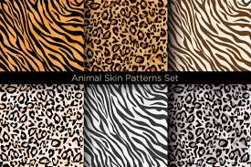
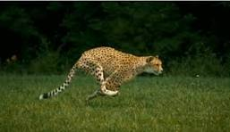

Le pelage du léopard est marqué de taches sur fond jaune pâle à marron chamois. La gorge, la poitrine, le ventre, la face interne des pattes et de la queue sont blancs. Les oreilles arrondies ont le revers noir avec un point blanc à l'intérieur. Sur les flancs, le dos et la partie supérieure des pattes, les taches forment des rosettes dont le cœur est brun et comporte parfois un point noir, comme celles du jaguar. La tête, les membres et la queue comportent des taches pleines noires. Sur la queue, les taches peuvent former des anneaux2. La disposition et la forme des taches sont très variables d'un individu à l'autre2. Dans les régions tropicales, le poil tend à être court et brillant de couleur sombre tandis que dans les régions froides, il est plus long, soyeux et clair. Le léopard de l'Amour est la sous-espèce aux rosettes les plus espacées et au pelage le plus clair. Le léopard d'Arabie a une robe claire et est caractérisé par sa petite taille6. Le léopard noir, plus connu sous le nom de « panthère noireNote 1 » est une variation de coloration liée à une mutation génétique appelée mélanisme : la fourrure conserve ses taches, mais celles-ci ne sont visibles que sous certains angles de lumière2 ou par des photographies (ou films) en infrarouge7,8. Cette mutation, qui n'est pas caractéristique d'une sous-espèce, est plus fréquente dans le Sud-Est de l'Asie9, et notamment dans les forêts humides et denses du Bengale et de Java4, où la robe constitue un camouflage efficace2. En Inde, la présence de léopard noir est confirmée dans le Kerala, le Chhattisgarh, le Maharastra, le Goa, le Tamil Nadu, l'Assam, l'Arunachal Pradesh et l'Odisha
Lors d'un sprint, la vitesse du léopard atteint 58 km/h10. Excellent grimpeur, ce félin est capable de soulever ainsi des proies beaucoup plus lourdes que lui comme la carcasse d'un girafon, dont la masse peut atteindre 150 kg, à une hauteur de 6 m11. Le léopard peut sauter sans élan sur six mètres de long et trois mètres de haut
